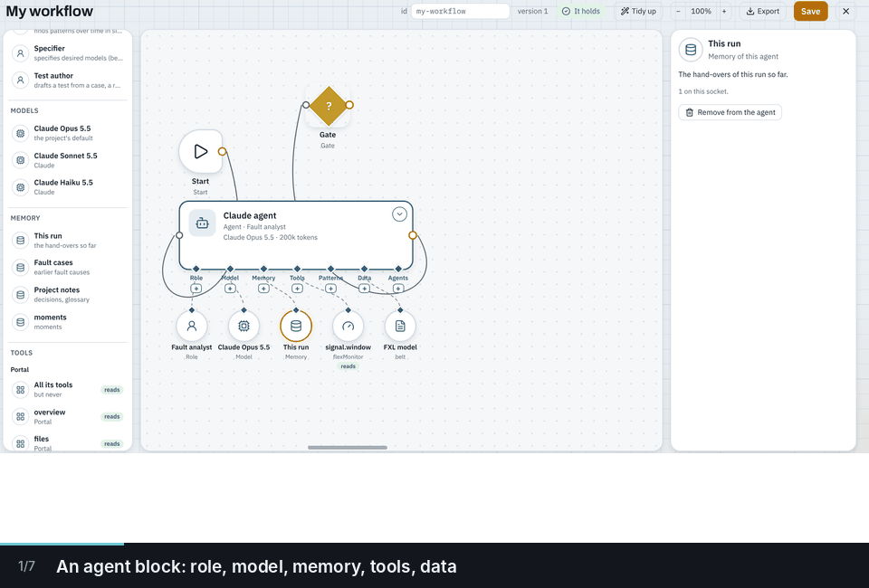
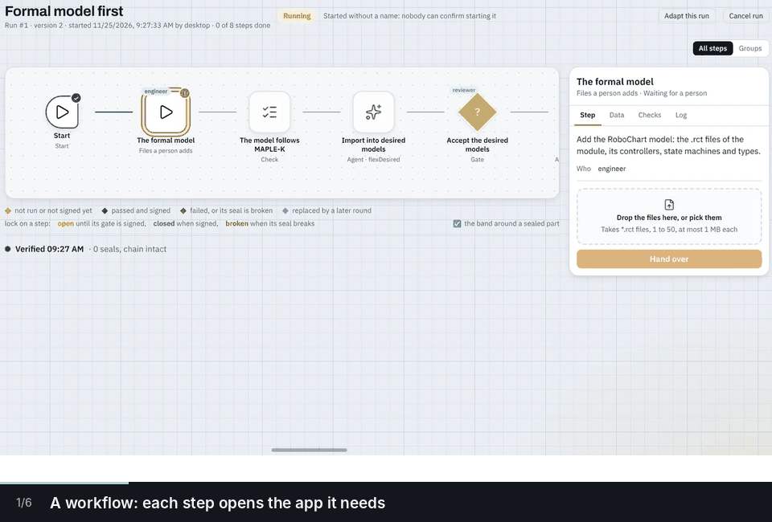
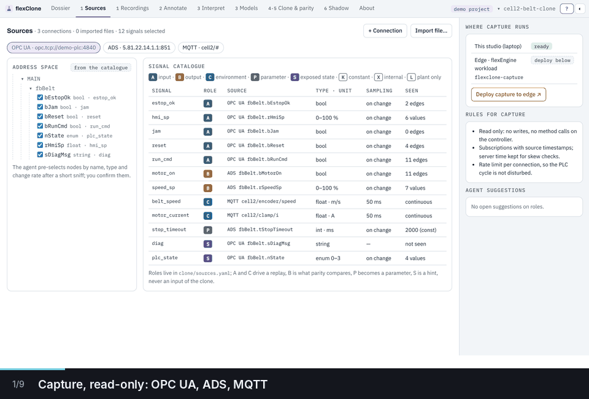
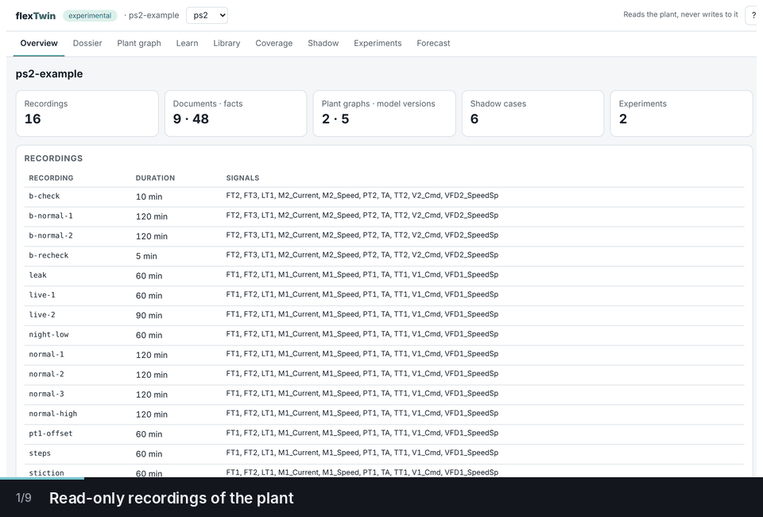

Agentic co‑engineering.
Trusted, end to end.
Develop once. Deploy anywhere.
flexIA is the end-to-end framework for software-intensive industrial automation — from the first requirement to a monitored machine. Model once, deploy across PLCs, SBCs and microcontrollers. AI agents do the routine work at every step; engineers sign every gate, and every verdict traces back to its requirement.
Automation evolved. The way we design it didn’t.
Industrial automation is no longer just PLCs, machines, and control logic. AI, Digital Twins, edge computing, and increasingly autonomous software are becoming part of the automation stack, while robots and autonomous mobile systems are rapidly becoming integral to warehouses and production environments. But we still engineer them as separate worlds. PLCs, robots, AI, Digital Twins, edge nodes, and cloud services are designed, integrated, and deployed piece by piece — with no unified view of the complete system. The result? Growing integration complexity, fragmented architectures, and system behavior that is difficult to predict, validate, and optimize.
Fragmented device support
Every class of compute has its own siloed toolchain — vendor IDEs for PLCs, container tooling for edge and servers, separate SDKs for microcontrollers. Nothing spans all of them.
No system-level overview
Robotics stacks, control logic, AI components and Digital Twins are integrated one by one. Nobody holds a model of how the whole system fits together, so integration problems stay invisible until they bite.
No model, no validation.
With no system-level model linking components to the hardware they run on, architecture mismatches only surface during commissioning, on real hardware — not on a screen beforehand.
Per-target deployment
Each device class is built and pushed on its own, once per target. There's no single action that places a whole distributed application across every compute device and keeps the components wired together.
The hard part was never any single device. It's designing, checking, and deploying the whole system as one — across every class of compute it runs on.
Escape the rebuild
One model targets PLCs, SBCs and microcontrollers, in Python, C++, Rust, Arduino or IEC 61131-3.
Catch it before it ships
Checks, fault-injected tests and simulation find the problem on screen, not during commissioning.
Trace every verdict
Every test, simulation and runtime result comes back to the requirement it proves, and to the regulation behind it.
Co-engineer with agents
Agents do the routine work at every step, within their tools and budget; engineers sign each gate.
Six stages. One model. A gate between each.
From the first requirement to a monitored machine: specify, model, implement, verify, release and monitor — every hand-over a gate an engineer signs, every step open to an agent.
Agents build. Engineers decide.
AI agents work inside your engineering workflow, not beside it. Every agent uses the same flexIA tools you do, within the rights you give it, and every hand-over is a gate a named engineer signs.
An agent is a block in your workflow
Plug in what it needs: a role, a model, its memory, the tools of the flexIA apps it may use, the patterns it follows and the data it works on. A lead agent can run a team of sub-agents within one budget; the run shows every turn.

Gated workflows with signatures you can verify
Follow a proven pattern step by step through the apps. Checks run before work moves on; each gate shows the evidence and needs a named signature. Approved steps are sealed — change anything under the seal and the gate opens again.

Everything flexIA gives you — design time to runtime.
One model, one ecosystem, across the whole lifecycle. Pick a phase to see what the platform does for you there.
Two proofs of concept, built on flexIA.
What the same framework makes possible next: learning from machines that already run. Both work on demo plants today — we are looking for pilot partners to try them on real ones.
Clone a controller nobody can open
Record what an old controller reads and writes — strictly read-only — mine its states, timing and rules, and let an agent turn them into models with evidence on every element, asking the engineer where the recordings can't tell. The clone then runs beside the original until they agree.

Demo conveyor controller; first case study on a water treatment cell.
Learn a plant model that knows where it holds
Build a graph of the plant — drives, motors, pumps, valves, tanks — learn each component from read-only captures and its datasheets, and run the model as a shadow beside the plant. It flags leaks, drifting sensors and wear, and keeps a coverage map of where it has been proven.

PS-2 demo pump station, with faults seeded on purpose.
One portal. Every tool, side by side.
Every app opens in the flexIA Portal on the same project, alone or two side by side. Use them together, or drop one into an existing pipeline.
flexIA Portal
One place for every app: workflows with signed gates, the agents, updates with a health check and roll back, on your computer or a server.
- flexRequirementsrequirements, traceability, compliance
- flexModelerFXL architecture and code generation
- flexDesiredbehaviour models and rules for agents
- flexIDEthe editor, with flex* completion
- flexCommunicatorPython, C++ and Rust libraries, IT/OT
- flexNode-arduinothe same API on microcontrollers
- flexConnectexplore machines that already run
- flexTesttests in the loop, with faults
- flexSimsimulation and analysis
- flexTestLablab benches, MiL to HiL
- flexDeploy + flexEnginesigned releases, the device agent
- flexMonitorhealth, signals, alarms
- flexMLlearned models, data to machine
- flexClone · flexTwinproofs of concept
Ready to co-engineer with agents you can trust?
flexIA is developed at Cosys-Lab, University of Antwerp, under the IOF Industrial Research Fund POC program — open-core by design, with an active Company Interest Group shaping what ships next.